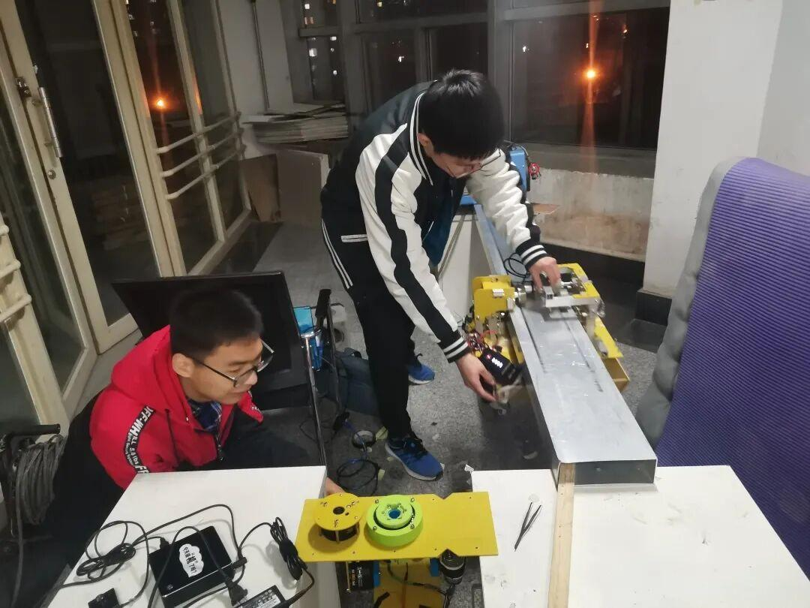
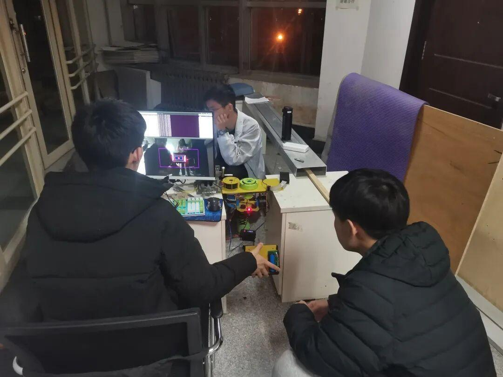
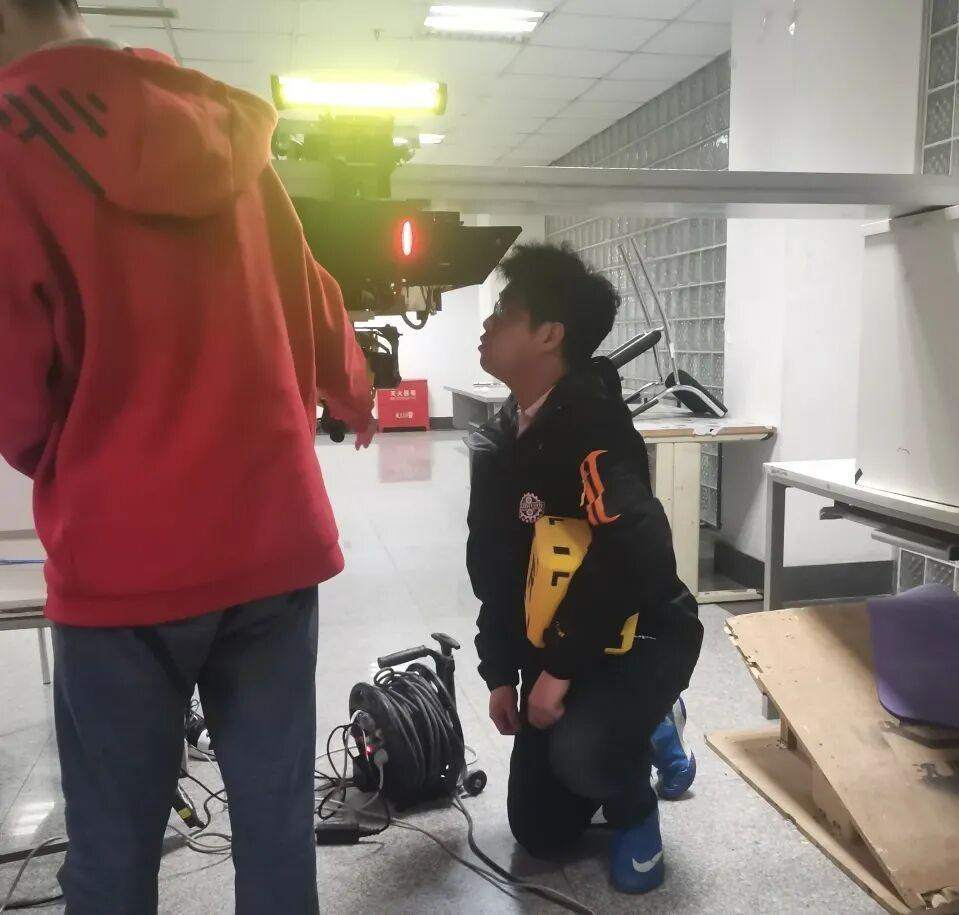
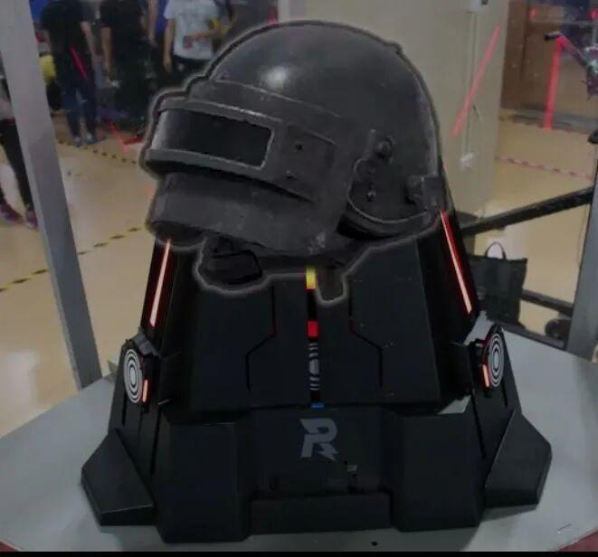

守护高地——哨兵机器人！
Robomaster赛事当中机器人共分为五种角色，分别是：英雄机器人、步兵机器人、工程机器人、空中机器人以及哨兵机器人。
五种机器人缺一不可，互相配合才能获得胜利，那么他们之中有什么秘密呢？就让我给大家带来五种机器人之一——哨兵机器人的独家爆料吧！
01
全自动的机器人

队员们正在调试哨兵机器人


02
基地的”好兄弟“
众所周知，基地就像是王者荣耀里的水晶，打爆基地也就意味着比赛的胜利，而哨兵机器人就像是长腿的高地塔，默默的在基地身边巡逻。
另外呢，在哨兵存活的时候基地不仅能获得火力保护，还具有百分之五十的减伤护甲，就像是给基地带了一个三级头。

当哨兵被摧毁后呢，基地就会变形露出内部的核心，此时弹丸将会对其造成百分百的伤害！
03
温馨提示
如果有粗心的小伙伴忘记设计或携带哨兵，在比赛开始两分钟后基地便会自动变形解除防御状态。
所以，队员们设计的哨兵走位是否风骚、能存活更久以及反击火力是否足够，也是评定一个队伍综合实力的关键哦。
好啦
今天的爆料就到这里了
想了解更多消息就动动小手关注我们吧
排版|王海彬
图片|信息部、网络